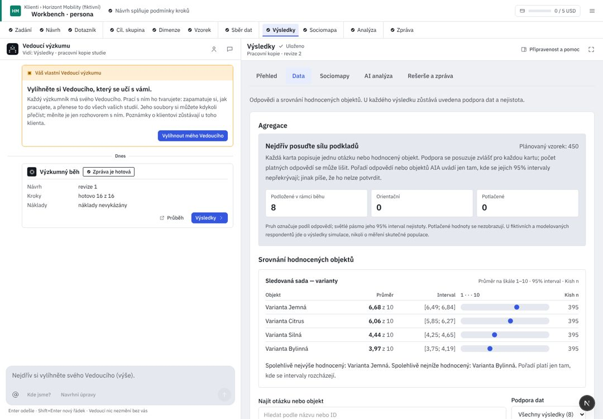

Klienti / Pivovar Zlatá Hora
Vnímání značek ležáků 2026
Modelováno: odpovědi 400 AI respondentů z populace, ne měření skutečných lidí. Tak je označí i zpráva.
VO1
Znalost Zlaté Hory proti konkurenci
Q1, Q2 a sada S1 · podložené
VO2Rozdíly podle věku a regionu
S1 podle věku · bez srovnání segmentů
VO3Atributy prémiových ležáků
běh to neměřil · mezera ze spuštění
Podložená čísla
18
Orientační
3
málo lidí, jen naznačují
Skrytá
1
příliš málo dat, číslo neukazujeme
Celkové hodnocení značek
Škála 1–10. Nejvýše: Zlatá Hora 12° a Pilsner Urquell; pořadí mezi nimi nelze potvrdit, intervaly se překrývají.
| Značka | Průměr | 95% interval na škále 1–10 | Efektivní n |
|---|---|---|---|
| {{r.l}} | {{r.m}} | {{r.n}} |
Otázky
{{q.id}}{{q.t}}{{q.sup}}
{{q.read}}
efektivní n {{q.n}}Technické údaje
metody, identifikátory, původ dat
Metoda agregace aia-aggregate-2 · sociomapa aia-sociomap-5 · běh RUN-7c2adfafa40740f4 · artefakt ART-91e2… SHA256 3be1…
UX kritika · Výsledky
Výsledky jsou první evidence. Dnes je krok uvnitř druhé navigace se záložkami a přehledem, na jedné kartě jsou tři různá „n“ a výzkumník čte kódy a ID. Kód d5d36b25; R/ = apps/web/src/components/rehome/research/.
Dnes v AIA (workbench, 1440 px)

{{c.l}}{{c.t}}
- {{x.t}}{{x.a}}